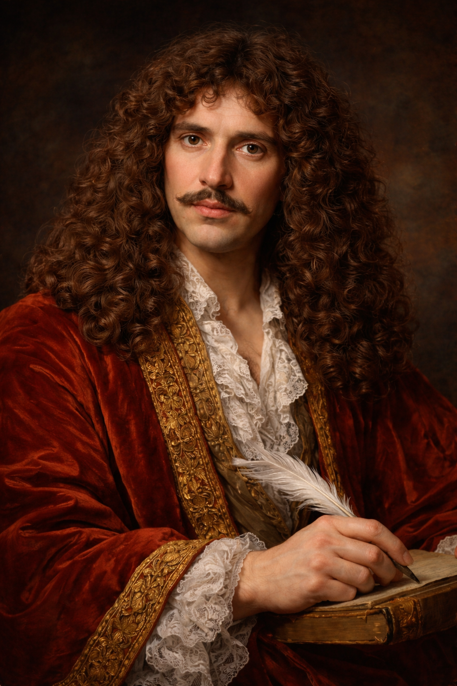

Dramaturge • Comédien • Maître de la comédie française
Molière, dont le véritable nom est Jean-Baptiste Poquelin, naît à Paris en 1622. Issu d’une famille relativement aisée, il aurait pu suivre une carrière stable dans l’administration. Cependant, il choisit de se consacrer au théâtre, une activité encore parfois mal vue à cette époque. Très tôt, il montre une grande passion pour la scène et pour l’observation des comportements humains.
Au début de sa carrière, Molière fonde une troupe de théâtre et voyage à travers la France pendant plusieurs années. Ces tournées lui permettent d’acquérir une grande expérience de la scène et de mieux comprendre le public. Elles jouent un rôle essentiel dans la formation de son style et dans le succès futur de ses pièces.
Dans ses comédies, Molière observe les défauts humains avec humour et intelligence. Il critique l’hypocrisie, l’avarice, la vanité et les comportements ridicules de certaines personnes de son époque. Grâce au rire, il parvient à faire réfléchir le public sur la société et sur les attitudes humaines.
Parmi ses pièces les plus connues figurent Le Misanthrope, Tartuffe, L’Avare, Le Bourgeois gentilhomme et Les Femmes savantes. Ses personnages sont souvent très vivants et représentent des comportements universels, ce qui explique pourquoi ses œuvres sont encore jouées aujourd’hui dans le monde entier.
Molière meurt en 1673 peu après une représentation du Malade imaginaire. Aujourd’hui, il est considéré comme l’un des plus grands auteurs du théâtre français. Son influence est immense, et on dit souvent que le français est « la langue de Molière ».